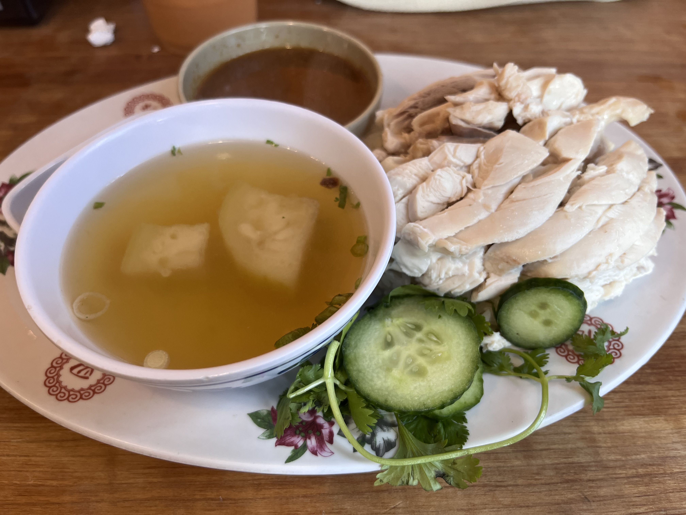
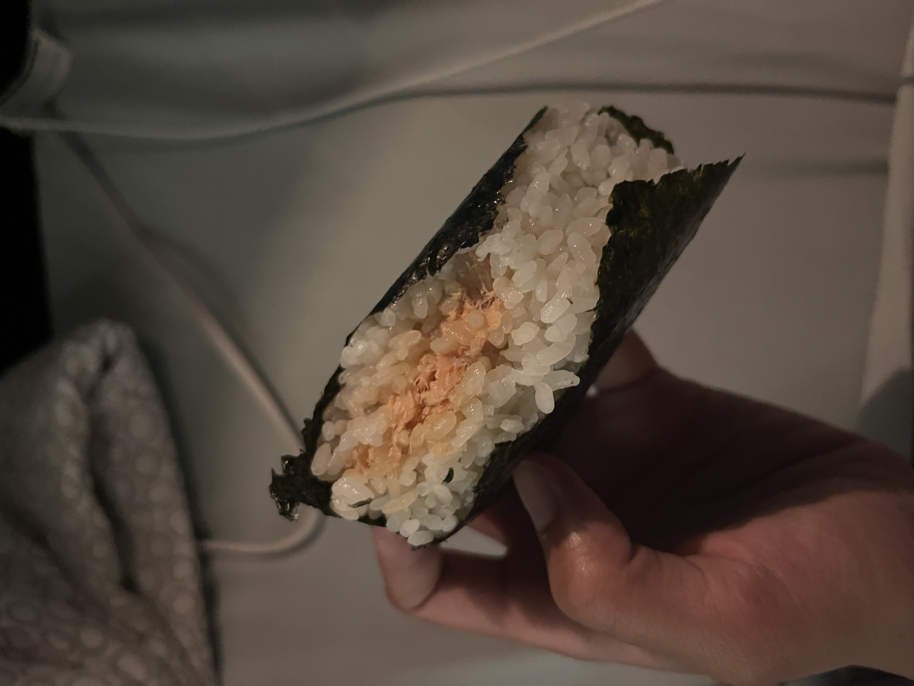
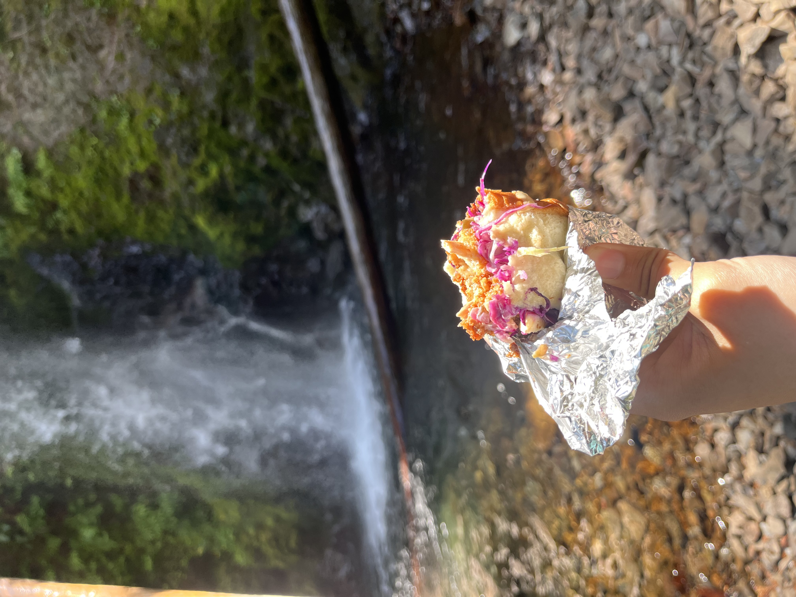

Adeline's Journey as a Foodie
Home Page
Madison, WI
Portland, OR
Seattle, WA
City: Portland, OR
Thai Cuisine
Local Dessert
Japanese Snacks
Japanese Cuisine
1. Nong's Khao Man Gai

2. Voodoo's Doughnut
3. Yokai Musubi

4. Tokyo Sando
